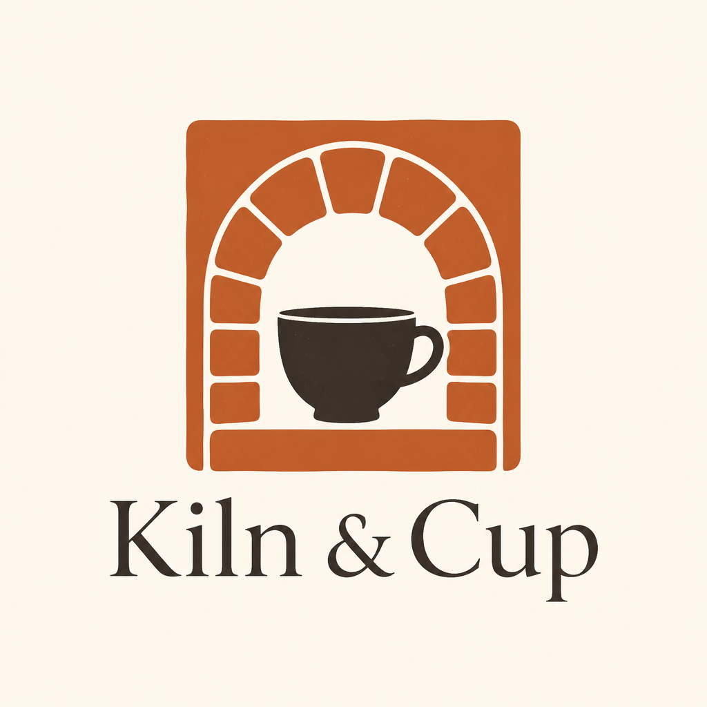
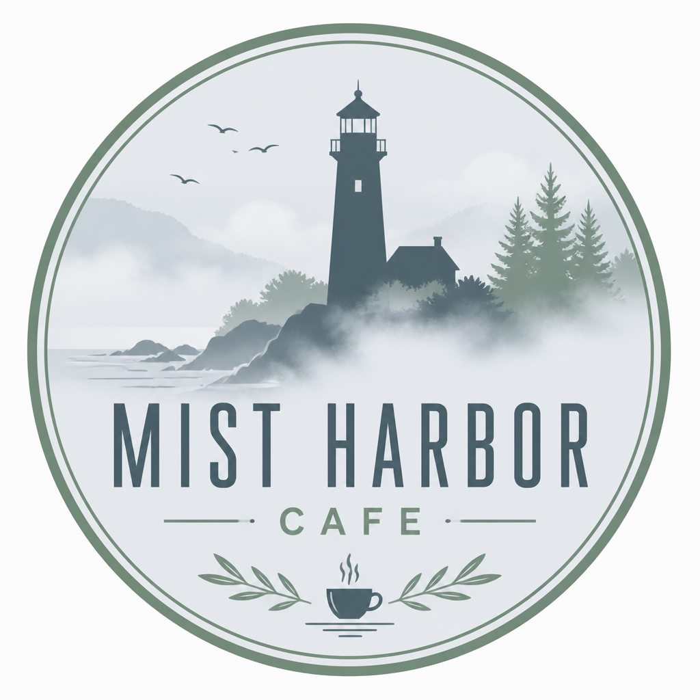
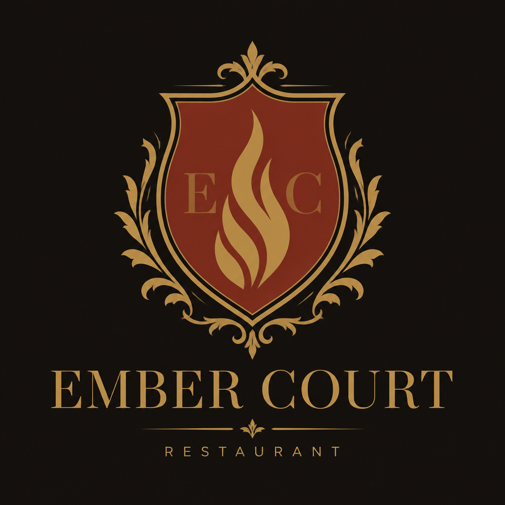
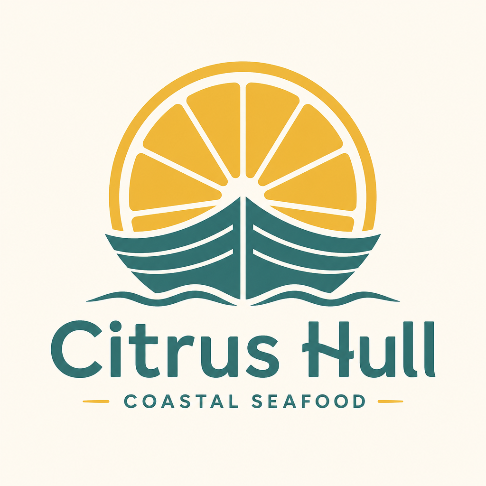

2 cafes · 2 restaurants · 1 collectible sneaker boutique. Shared pattern language with croze↔vault lockstep practice.

Cafe · ceramic workshop · sesame croze practice

Cafe · pier board · guest croze

Restaurant · fire courtyard · Bodoni

Restaurant · catch board · shellfish croze
Sneaker vault · lastInspected field practice